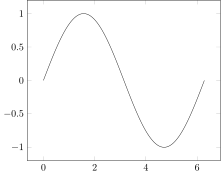
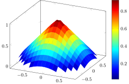
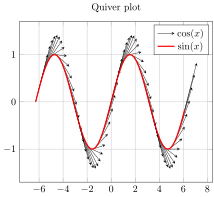

Tables
Tables are coordinates in a tabular format (essentially a matrix), optionally with named columns. They have various constructors, for direct construction and also for conversion from other types.
Unnamed columns
Let
x = range(0; stop = 2*pi, length = 100)
y = sin.(x)You can pass these coordinates in unnamed columns:
Plot(Table([x, y]))
Named columns
Or named columns:
Plot(Table([:x => x, :y => y]))
Rename options
The columns can be renamed using options:
@pgf Plot(
{
x = "a",
y = "b",
},
Table([:a => x, :b => y]))
Excluding points
In the example below, we use a matrix of values with edge vectors, and omit the points outside the unit circle:
x = range(-1; stop = 1, length = 20)
z = @. 1 - √(abs2(x) + abs2(x'))
z[z .≤ 0] .= -Inf
@pgf Axis(
{
colorbar,
"colormap/jet",
"unbounded coords" = "jump"
},
Plot3(
{
surf,
shader = "flat",
},
Table(x, x, z)
)
)
Quiver plot
A quiver plot can be created as:
x = -2pi:0.2:2*pi
y = sin.(x)
u = ones(length(x))
v = cos.(x)
@pgf Axis(
{
title = "Quiver plot",
grid = "both"
},
Plot(
{
quiver = {u = "\\thisrow{u}", v = "\\thisrow{v}"},
"-stealth"
},
Table(x = x, y = y, u = u, v = v)
),
LegendEntry("\$\\cos(x)\$"),
Plot(
{
color = "red",
very_thick
},
Coordinates(x, y)
),
LegendEntry("\$\\sin(x)\$")
)